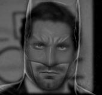
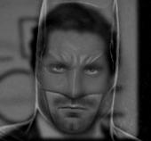
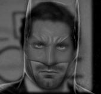
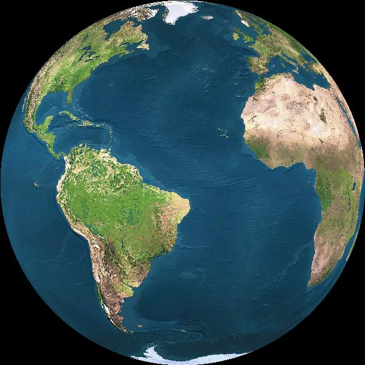
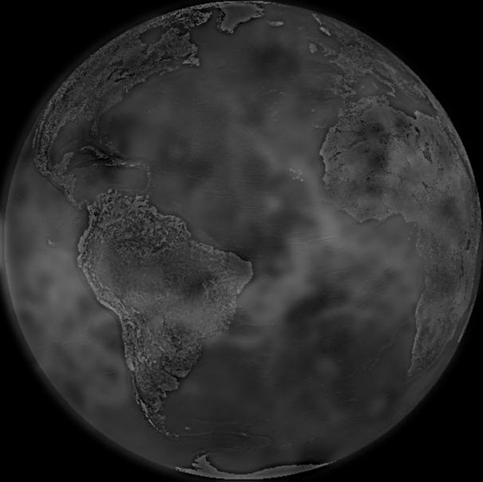
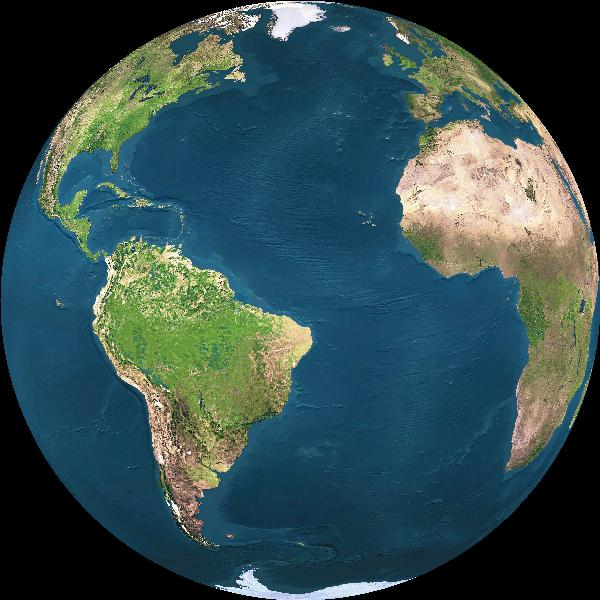
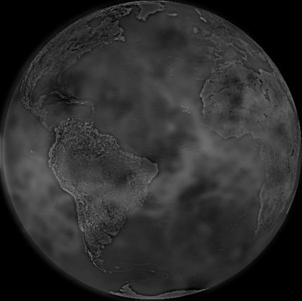

We use high pass and low pass filters to extract various parts of an image and use that information to create interesting combinations.
Image sharpening is a basic of photo editing. But if we were to do it ourselves without the help of any photo editing program, how would
we do this? The key is to use the formula img + α * highpass(img),
where highpass(img) is the high pass version of our original image, obtained by subtracting the low pass Gaussian version from the original image.
Even the barely noticeable watermark from the original image is clearly there when sharpened!
Using high pass and low pass filters to our advantage, we can create combinations of photos that change in appearance as a function of viewing distance. So when viewed up close, an image may look like one thing, but when viewed from afar, its appearance changes! This works because at shorter distances, high frequency dominates while at longer distances, low frequency dominates.

 



This doesn't really work because the banana is so different in shape/composition from the telephone photo.
Gaussian Stack
Laplacian Stack
Previously, with multiresolution blending, we used Laplacian stacks to blend the images together. In this portion of the project, we focus on Poisson Blending and how we can use it to seamlessly blend parts of images together. Using the source and target images, we find values for the target pixels that preserve the source image's gradient as much as possible. We choose to ignore intensity and prioritize gradient values since that is what people tend to notice more. We do this by taking into account a pixel as well as its four neighbors. This will create a resulting image that looks as natural as possible.
Here is the result of the toy problem:

I set up a least squares problem to solve for the appropriate pixel values. I solve for each RGB channel separately. In order to maximize efficiency, I find the pixels that we actually care about (the ones where the value in the mask is not 0). These are the variables we need to solve for, because the rest of them are just copied directly from the background. Using a sparse matrix for A also made the algorithm a lot more efficient. After solving, I clamp all the negative values to ensure a valid result.


This was a failure. As you can see, the coloring of Slenderman does not match the background image of the forest. Also, the gradients don't seem to match very well as you can still see the outline of the polygon drawn around the figure despite using the Poisson Blending algorithm. I think this problem occurred due to the nature of the background image chosen. The forest has a lot of branches and trees, which can get in the way of seamless blending because it is very obvious to the eye if part of a branch or tree disappears due to the blending algorithm. This is why this algorithm tends to work best with background images that are simple and don't have a lot of patterns that could be easily disrupted.
Poisson Blending works best in this case, in my opinion, because Efros looks like he is a part of the galaxy but you can still make out his face. Of course, in this case it is up to the viewer's preference - some may like the multiresolution blending version better because it is easier to distinguish him from the background. In general, multiresolution blending is better for cases when you want to distinguish more clearly between the two images you are blending, but still want a smooth seam. Poisson Blending is better for when you want to insert a part of another image into the background of another such that the inserted image looks like a part of the background. And Mixed Gradient blending is best when you want to put emphasis on the more prevalent image of the two that you are blending (in this case the galaxy is much more prominent).
Here is an example done with mixed blend gradient: